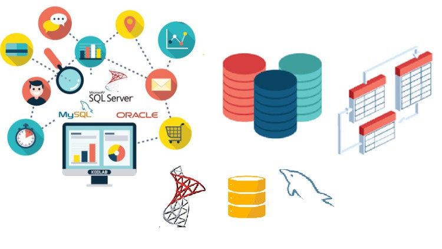

İlk Blog Yazım: Yazılım Dünyasına Giriş
Yazılım dünyasına ilk adımımı attığım zamanları hatırlıyorum. Her şey o kadar karmaşık görünüyordu ki... Ancak zamanla öğrendiklerim ve deneyimlerim sayesinde bu dünya benim için vazgeçilmez bir tutku haline geldi.

- İlk programımı yazdım.
- Algoritmaların temelini öğrendim.
- Java diline başladım.
Daha fazla bilgi için W3Schools ve MDN Web Docs sitelerine göz atabilirsiniz.
Veritabanı Yönetimi: SQL ve MySQL
Veritabanı yönetimi, yazılım geliştirme sürecinde önemli bir rol oynar. SQL ve MySQL ile veritabanı oluşturma, veri ekleme, silme ve güncelleme işlemlerini nasıl yapabileceğinizi öğrenebilirsiniz.

- Veritabanı oluşturma.
- Tabloları tanımlama.
- Veri ekleme, silme ve güncelleme.
SQL hakkında daha fazla bilgi için MySQL resmi sitesi ve SQLZOO kaynaklarını inceleyebilirsiniz.
Web Geliştirme: HTML, CSS ve JavaScript
Web geliştirme, kullanıcı dostu ve etkileyici web sayfaları oluşturmayı içerir. HTML ile yapı, CSS ile stil ve JavaScript ile işlevsellik ekleyerek dinamik web sayfaları oluşturabilirsiniz.

- HTML ile sayfa yapısını oluşturma.
- CSS ile stil ekleme.
- JavaScript ile etkileşimli özellikler ekleme.
Web geliştirme hakkında daha fazla bilgi için Codecademy ve freeCodeCamp sitelerine göz atabilirsiniz.